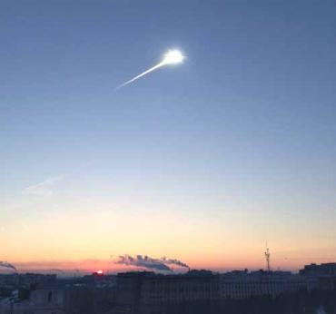

ASTEROIDS
Introduction
An asteroid is a spatial rock, it is the smallest body of the solar system, formed in the same manner as the rest of the solid bodies in our solar system during the collapse of the solar nebula with the majority arising in the area between Mars and Jupiter, named “The asteroid belt” Many asteroids, specifically the larger ones, were ejected from the orbit. Computer models suggest that as little as 1% of the original mass remained, with the two largest chunks - Ceres and Vesta - absorbing some of the remaining material and cooling into nearly spherical orbs. Nineteenth century, more precisely in 1801, the Italian astronomer Giuseppe Piazzi discovered the asteroid or minor planet Ceres; today two million asteroids have been calculated.
Classification
Asteroids are usually classified by one of two methods: either their orbital mechanics or their composition (determined from their reflectance spectrum). The problem has generally been that the spectral classification has proven unreliable. This has led, over time, to several different spectral rubrics. Hence there doesn't seem to be general agreement on this issue. Therefore it is more common to refer to asteroids by their orbital characteristics, specifically where they orbit in our solar system. The major groups of asteroids include those orbiting in the asteroid belt, the Trojan asteroids and the Apollo asteroids.
- The Asteroid belt
- Trojan Asteroids
Chelyabinks asteroids impact
Scientists are still analyzing records of the Feb. 15th event, but preliminary indications derived from infrasound instruments around the world established to monitor potential nuclear bomb tests suggest the explosion was about the equivalent of half a megaton of TNT, or approximately 30 Hiroshima A-bombs exploding at once. The asteroid exploded in midair at high altitude (early reports suggest about 30 miles high). Hitting anything at 40000 MPH, even air, is like hitting concrete. The enormous deceleration and pressure of hitting the atmosphere ripped apart the asteroid. Most rocky asteroids of this size that strike Earth explode in midair. Fragments of the asteroid after the explosion rained down in the vicinity 